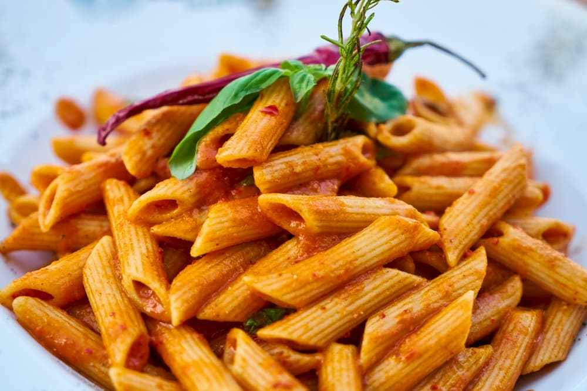

A culinária italiana apresenta influências da cozinha etrusca, da antiga Grécia, da antiga Roma, Bizantina, Hebraica e Árabe.
E sofreu importantes mudanças com a descoberta do Novo Mundo (América), como a introdução de alimentos como batata, tomate, pimentão e milho. Todos esses alimentos hoje fundamentais na culinária italiana foram introduzidos em larga escala apenas no século XVIII.
A culinária italiana é uma das mais famosas do mundo e é conhecida pela sua diversidade em nível regional como exemplos de produto típico temos o queijo Parmigiano Reggiano da região da Emília Romana e o Gongonzola da Região do Piemonte.
Região: Campania
O spaghetti pode ser servido com uma variedade de molhos, o mais comum é com molho de tomate com queijo ralado e folhas de manjericão.

Regiões: Campania e Sicilia
Massa em formato cilíndrico liso ou com listras. Em geral são preparados ao molho vermelho ou pesto.
Região: Basilicata, Emília Romana, Lazio, Marche, Piemonte, Toscana e Lombardia.
Massa feita com farinha de trigo e ovos com diversos tipos de recheio.
Hoje em dia, os hábitos alimentares dos italianos são diferentes do que eram no passado, tanto no almoço como no jantar. O típico almoço italiano tem vários pratos, começando com o antepasto. Existem muitos tipos de pratos para o antepasto, como frios, azeitonas, saladas etc. São pequenas porções.
Em seguida, vem o primeiro prato, feito geralmente com macarrão ou arroz com diversos tipos de molhos, ou mesmo uma sopa, com ou sem macarrão. O segundo prato é à base de carne, peixe, ovo ou queijo, com um contorno de verdura. Após, vem a sobremesa que pode ser uma frutas ou um doce, e por fim, o café.
Esse tipo de refeição hoje em dia é típico de ocasiões especiais como festas de casamento. Em geral, se come um primeiro e segundo prato e depois uma fruta. Porém, muitas famílias italianas preferem um prato único: um primeiro ou segundo prato. No almoço e na janta os italianos adoram beber um cálice de vinho.